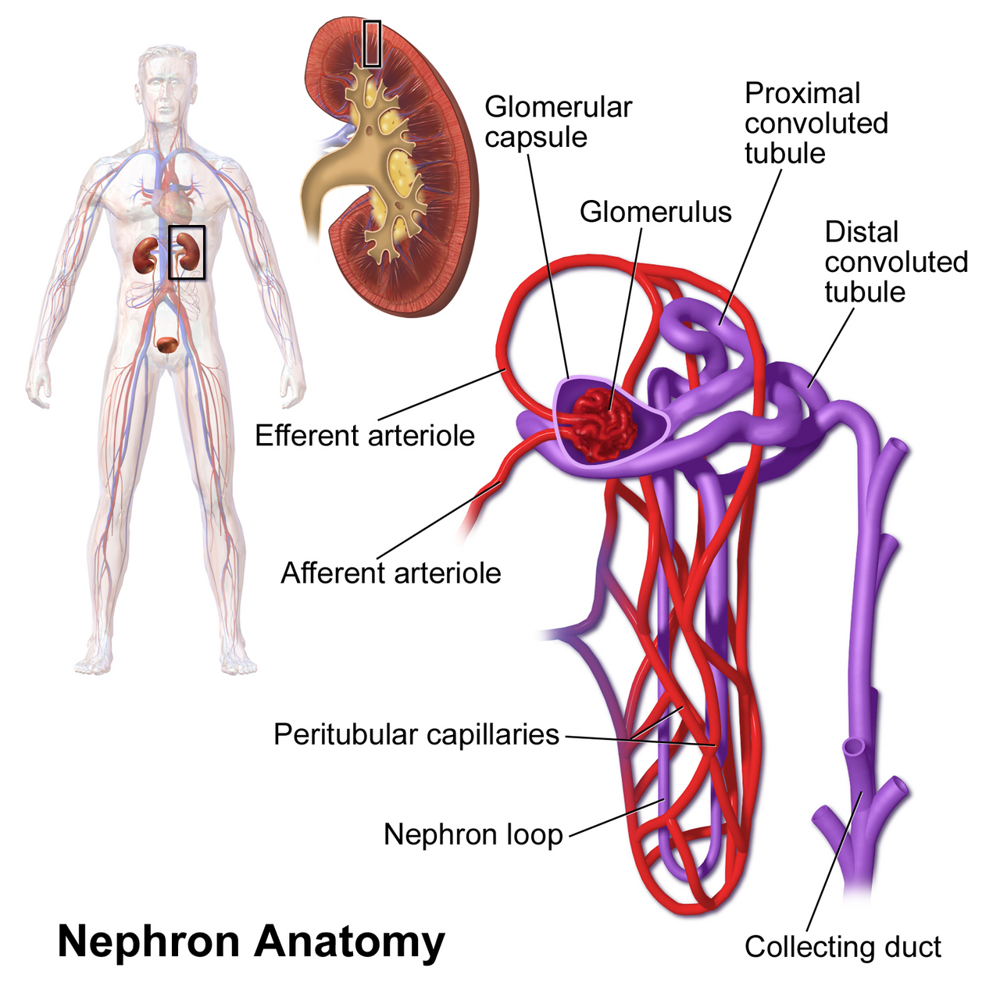
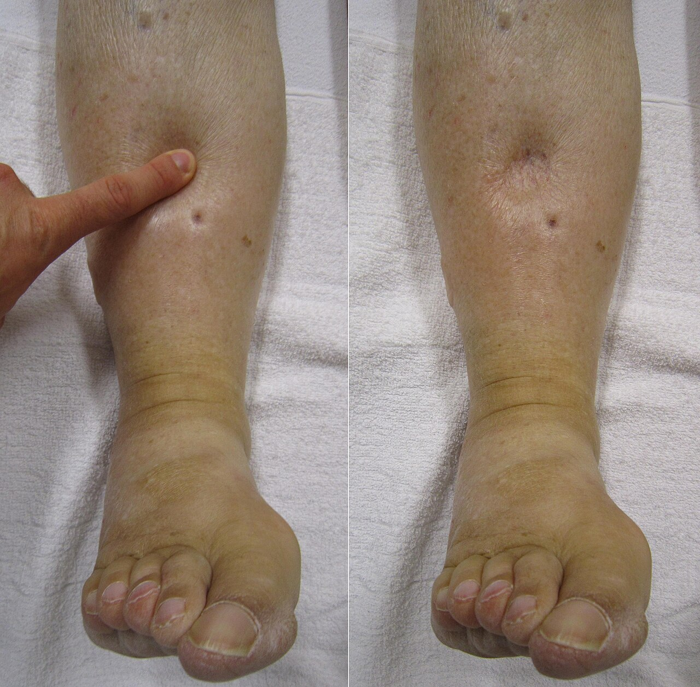

תכנון תוכנית נוזלים
מים בגוף, מה יש בשקית, נוזלי אחזקה, הערכת נפח ליד המיטה. הפרעות בנתרן, באשלגן, בסידן ובמגנזיום
בסוף המפגש תדעו
- לתאר את חלוקת המים בגוף ואת התפקיד של הכליה, ADH ואלדוסטרון בוויסות מים ומלח
- להכיר את הרכב התמיסות הנפוצות ולבחור תמיסה לפי המצב
- לחשב נוזלי אחזקה ולהתאים אותם כל יום למצב הנפח של החולה
- להעריך מצב נפח ליד המיטה ולבנות תוכנית נוזלים למטופל כירורגי
- לאבחן ולטפל בהפרעות נפוצות בנתרן, באשלגן, בסידן, במגנזיום ובזרחן
שלושה מדורים. רק לאחד יש לנו גישה
- בתוך התא: אשלגן ומגנזיום, זרחות וחלבונים. מחוץ לתא: נתרן, כלוריד וביקרבונט
- המים עוברים בחופשיות דרך קרום התא. לכן הנתרן קובע את תנועת המים
- חלבוני הפלזמה מחזיקים מים בתוך כלי הדם (לחץ אונקוטי). הלימפה מחזירה מים מהחלל הבין-תאי
איפה נקבע כמה מים ומלח נשארים

👆 לחצו על חלק בנפרון כדי לקרוא מה קורה בו
הכליות מקבלות 25% מתפוקת הלב. סינון תקין: כ-120 מ״ל לדקה. הזרימה נשמרת בלחץ זילוח של 80–180. כשהלחץ יורד משתחרר רנין. אנגיוטנסין 2 מכווץ את העורקיק היוצא כדי לשמור על הסינון
סופגת בחזרה כמעט את כל הגלוקוז וחומצות האמינו, כ-65% מהנתרן והמים וכמעט את כל הביקרבונט. באובדן נפח אלדוסטרון מגביר ספיגת ביקרבונט: זו "בססת ההתכווצות" של החולה המקיא
הזרוע העולה העבה לא חדירה למים וסופגת נתרן וכלוריד. כך נוצר מפל ריכוזים עד 1,200 מיליאוסמול בעומק הליבה. כאן פועל פורוסמיד. מתן פורוסמיד לחולה יבש עם מיעוט שתן מגדיל את השתן אבל מזיק
חדירים למים רק בנוכחות ADH, שמכניס תעלות מים (אקווהפורינים). אלדוסטרון מגביר ספיגת נתרן והפרשת אשלגן. עודף ADH: שימור מים ונתרן נמוך (SIADH). חוסר ADH: שתן מדולל ונתרן גבוה (סוכרת תפלה)
הרכב הקריסטלואידים
| מ״ק לליטר | סליין 0.9% | רינגר לקטט | Plasma-Lyte A | פלזמה |
|---|---|---|---|---|
| נתרן | 154 | 130 | 140 | 134–145 |
| כלוריד | 154 | 109 | 98 | 98–108 |
| אשלגן | 0 | 4 | 5 | 3.4–5 |
| סידן | 0 | 3 | 0 | 2.25–2.65 |
| מגנזיום | 0 | 0 | 3 | 0.7–1.1 |
| בופר | אין | לקטט 28 | אצטט 27, גלוקונט 23 | ביקרבונט 22–32 |
| אוסמולריות | 308 | 273 | 294 | 280–295 |
כלל 4-2-1 · ואיך לא להשתמש בו
יבש, רטוב, או שניהם?
- שתן: מדד מצוין לנפח. תפוקה גבוהה: הגוף מנסה להיפטר ממים, מורידים קצב
- מיעוט שתן: פחות מ-400 מ״ל ביממה בגבר של 70 ק״ג, כלומר 0.24 מ״ל לק״ג לשעה. בולוס של ליטר על כל שתן מתחת ל-0.5 מוביל בדרך כלל לעודף נוזלים
- יחס שתנן לקריאטינין: מעל 20: טרום-כלייתי. מתחת ל-10: נפח מלא (רק בכליות תקינות)
- בצקות: חולה יכול להיות בצקתי בכל הגוף ועדיין יבש בתוך כלי הדם. אחרי ניתוח זה שכיח
- דופק: לפרש בזהירות. כאב, חרדה, חום והורמונים משנים אותו
- במונשם: יחס PaO₂/FiO₂ יורד כשיש מים בריאות

חמש שאלות לפני כל הזמנת נוזלים
היפונתרמיה
- הסיבה השכיחה: אנחנו. מים חופשיים בעירוי. גלוקוז 5% במים לחולה שדימם או מקיא מוריד נתרן מהר
- היפונתרמיה חריפה בדרך כלל עם תסמינים. כרונית, גם קשה, יכולה להיות שקטה
- מסווגים לפי מצב הנפח. שוללים סוכר גבוה (נתרן "מדולל")
- אחרי ניתוח, טראומה או כוויה ADH עולה באופן זמני: היפונתרמיה עם נפח תקין
היפרנתרמיה וחישובים
- מעל 145. בינונית (146–159) נסבלת די טוב. קשה (מעל 160): חולשה, אי-שקט, ישנוניות ועד תרדמת
- חסר נפח: הקאות, זונדה, שלשולים, חום. מתקנים את הנפח בתמיסה איזוטונית
- נפח תקין: סוכרת תפלה. מים חופשיים ודסמופרסין
- עודף נפח: לרוב אנחנו גרמנו (תמיסות היפרטוניות). משתנים בזהירות
- מי גוף כוללים: משקל × 0.6
- חסר מים חופשיים: (Na / 140 − 1) × TBW
- חסר נתרן: (Na goal − Na plasma) × TBW
- נתרן מתוקן לסוכר: Na + 0.016 × (Glucose − 100)
- אוסמולליות מחושבת: 2 × Na + BUN/2.8 + Glucose/18
- FeNa: מתחת ל-1%: טרום-כלייתי. מעל 2%: פגיעה כלייתית
היפוקלמיה
- מתחת ל-3.5. חולשה, איליאוס, הפרעות קצב. מתחת ל-2.5: פירוק שריר. מתחת ל-2: שיתוק רפה
- בחולה כירורגי: הקאות, זונדה, שלשולים, פיסטולות של המעי והלבלב, משתנים, אינסולין ובססת
- אק״ג: גלי T שטוחים וגלי U. סיכון גבוה יותר עם דיגוקסין
- ערך נמוך בדם מסמן חוסר גדול בתוך התאים. תיקון מלא לוקח ימים
היפרקלמיה: מה עושים ובאיזה סדר
שלושה שקל לשכוח
- תקין 8.5–10.5 מ״ג/ד״ל. רק כ-45% מיונן ופעיל
- מתקנים לאלבומין: 0.8 על כל 1 ג׳/ד״ל
- נמוך אחרי כריתת בלוטת התריס (1–2%), בדלקת לבלב ובעירוי מהיר של מוצרי דם (ציטרט)
- תסמינים: נימול, עוויתות, QT ארוך. מתחת ל-7: סידן גלוקונט 1–2 ג׳ ב-10–20 דקות
- נמוך ב-11–65% מחולי טיפול נמרץ
- משתנים, שלשולים, אלכוהול
- גורם לאשלגן ולסידן "עקשניים". בחסר קשה: torsades
- תיקון: מגנזיום סולפט, 8–12 ג׳ ביממה הראשונה. זהירות באי-ספיקת כליות
- תקין 2.5–4.5 מ״ג/ד״ל
- נמוך: חולשת סרעפת וקושי בגמילה מהנשמה. שכיח אחרי כריתת כבד גדולה
- תסמונת הזנה מחדש: זרחן נמוך הוא סימן ההיכר. בהרצאה על תזונה
- מתחת ל-1: בווריד, עד 45 מילימול
מקרה: מקיא כבר חמישה ימים
- מה ההפרעה בחומצה-בסיס? למה?
- איזו תמיסה תבחרו? מה תוסיפו לה?
- מה עוד חייבים לבדוק?
- איך תדעו שהטיפול עובד?
👆 לחצו כדי לראות את התשובה
- בססת התכווצות: אובדן חומצה וכלוריד בהקאות. האלדוסטרון מגביר ספיגת ביקרבונט ומפריש אשלגן
- תמיסה: סליין 0.9% מתאים במיוחד לחולה מקיא עם בססת התכווצות. מוסיפים אשלגן כלורי
- לבדוק: מגנזיום (בלעדיו האשלגן לא יעלה), קריאטינין ואק״ג בגלל האשלגן. לא לתת גלוקוז 5% במים לבד: הנתרן ירד
- מעקב: שתן לשעה, דופק, אלקטרוליטים חוזרים. החוסר באשלגן בתוך התאים גדול. התיקון לוקח ימים
מחקרים שכדאי להכיר
5,037 חולי טיפול נמרץ. תמותה ב-90 יום: 21.8% עם Plasma-Lyte לעומת 22.0% עם סליין. גם בדיאליזה חדשה אין הבדל (12.7% לעומת 12.9%)
Finfer S et al. N Engl J Med 2022;386:815-2611,052 חולים ב-75 יחידות. תמותה ב-90 יום: 26.4% לעומת 27.2%, בלי הבדל מובהק. עירוי איטי של הבולוס (333 מ״ל לשעה) לא עזר גם הוא
Zampieri FG et al. JAMA 2021;326(9), doi:10.1001/jama.2021.11684 · מהירות העירוי: JAMA 2021;326:830-8178 חולים עם היפונתרמיה תסמינית קשה. תיקון יתר: 17.2% בבולוסים לעומת 24.2% בעירוי רציף, בלי הבדל מובהק. בבולוסים פחות צורך להוריד שוב את הנתרן
Baek SH et al. JAMA Intern Med 2021;181:81-921,690 מנותחי מעקפים. תוספת רק מתחת ל-3.6 לא הייתה נחותה מיעד של 4.5: פרפור עליות 27.8% לעומת 26.2%, במחיר נמוך יותר
O'Brien B et al. JAMA 2024;332:979-88חמישה דברים לקחת למחלקה
- הנתרן קובע לאן זזים המים. ריכוז הנתרן ומצב הנפח הם שתי שאלות נפרדות
- סליין אינו פיזיולוגי: הרבה כלוריד. מתאים לחולה המקיא. לרוב החולים אפשר גם תמיסה מאוזנת
- אחזקה לפי 4-2-1, אבל מתאימים כל יום. החולה אחרי ניתוח לרוב עמוס, לא יבש
- מיעוט שתן אחרי ניתוח לא תמיד אומר חוסר נפח. בודקים את כל החולה לפני בולוס
- אשלגן: קודם מגנזיום. היפרקלמיה: קודם סידן, אחר כך להכניס לתאים, בסוף להוציא מהגוף